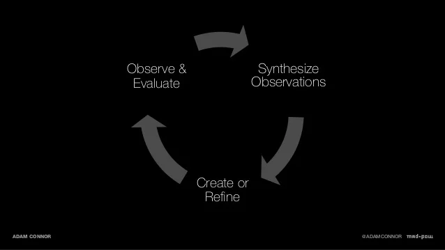

Install The Akash Agent
Datacenters and companies with underutilized capacity install the Akash agent on servers they want to add to the network. Once registered with the network, they become available for tenants to deploy containerized workloads to

Allocation by Auction
Deployment slots are allocated via an auction process that begins with a user defining the deployment criteria(resources, topology, price) in a declarative file posted to the Akash blockchain. providers then programatically bid on the deployment, with the low bid winning and creating a lease between tenant and provider, again written to the chain

Workload Distribution
Workloads are then distributed off chain via Akash's peer-to-peer file sharing protocol, and a secure overlay network established. Once live, the agreed-upon count of Akash tokens is transferred from tenant to provider periodically for as long as the workload is live, as determined by the network.